Seminar on Harinama Cintamani – Part 1 by HH Bhanu Swami | New Govardhana, Australia | 18 Mar 2025
nama om vishnu-padaya krishna-preshthaya bhu-tale
srimate bhaktivedanta-svamin iti namine
namas te sarasvate deve gaura-vani-pracharine
nirvishesha-shunyavadi-pashchatya-desha-tarine
jaya sri-krishna-chaitanya
prabhu nityananda
sri-adwaita gadadhara
shrivasadi-gaura-bhakta-vrinda
Hare Krishna Hare Krishna Krishna Krishna Hare Hare
Hare Rama Hare Rama Rama Rama Hare Hare
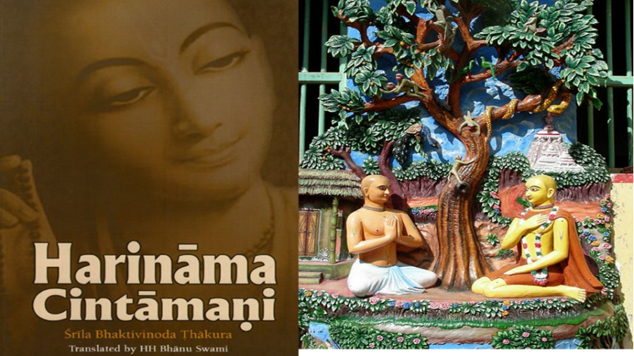
Harinama Cintamani is a short poetic work by Srila Bhaktivinoda Thakur. Prabhupada has mentioned this once and said that he wanted to translate it, but he never got around to translating it. This is a poetic work, so it’s a little bit creative, but it’s actually based upon scripture, and its subject matter is chanting the holy name, which is like cintamani or a touchstone.
In the Caitanya Caritamrta , we have a description of Caitanya Mahaprabhu requesting Haridas Thakur to glorify the holy name in Puri. And then, of course, Haridas Thakur says, I’m very unqualified, but I will do my best to glorify the name. So it was very suitable for Haridas Thakur to do the glorification of the name on behalf of Caitanya Mahaprabhu, because he was appointed by Caitanya Mahaprabhu as an Namacharya. So he was the authority on chanting the name. So it was very proper that Caitanya Mahaprabhu tell him, order him, to glorify the name in many ways. So then he glorified the name. The details are not given there, but based on that incident, Bhaktivinoda Thakur has written this work. So we say the expansion of Haridas Thakur’s explanation of the holy name at the request of Caitanya Mahaprabhu.
So, as we know, chanting the name is the Yuga Dharma, which has been instituted by Caitanya Mahaprabhu in our Sampradaya. This is the main method of advancement in Krishna consciousness. And the main way in which we can attain Prema. Chanting the name of the Lord. When we say name, or in Sanskrit – Nama, this word has a special significance. It’s simply the name, just like we have names of many things, we have names of Supreme Lord like Govinda, Shyamasundar, Gopal. So these are called names. And so the Yuga Dharma is chanting those names. Just by themselves. We have other forms of glorifying the Lord. We have verses. So many astakas, glorifying the name, glorifying Krishna, glorifying Balarama, etc. Those are also bhakti. But this is the simplest possible way of glorification. Just the name.
The other way of glorifying is through mantras. Of course, we say Hare Krishna mantra. But technically, it is Nama. And in Caitanya caritamrta, when it uses the word mantra, it has a different meaning. Of course, in the mantras, there are names of Krishna. But there are more than just the names. There are verb forms. There may be adjectives, etc. So these are called mantras. And there are particular mantras which are used for Diksha or initiation. They are secret mantras. And those are the mantras we use in deity worship. So when we say you can only worship the deity when you get second initiation, the reason for that is you get those mantras at that time. And then with those mantras, you are supposed to worship the deity. Perhaps many devotees don’t do that. They just offer leaf, fruit, flower. But technically, to do it according to Pancharatra, you have to utter the mantra. Then it becomes accepted by the Lord. And you utter that mantra silently. You never tell that mantra to anybody. So that is the Diksha mantra. But that’s another way of worshiping the Lord or praising the Lord through the mantra. But it’s a little more particular. You have to get initiation to do that. The mantra is secret. You cannot tell it to anybody else.
The name is simpler. It is name of the Lord. And anyone can chant it. And you don’t need initiation. And you can tell anyone to chant the name of Shyamsundara, Govinda or Krishna.
It’s free [Laughs]. So this is the Yuga Dharma, the name. Particularly, of course, Lord Caitanya chanted many names as we see in Caitanya Caritamrta. But he also particularly gave this one sequence of names, Hare Krishna, Hare Krishna, etc. So this is the common form of Nama or Nama Sankirtan, chanting this particular mantra. Of course, we can chant other names as well. But this is the main one that Lord Caitanya recommended. And so when we see the Goswamis with their beads chanting [Laughs], chanting the name, they’re chanting Hare Krishna.
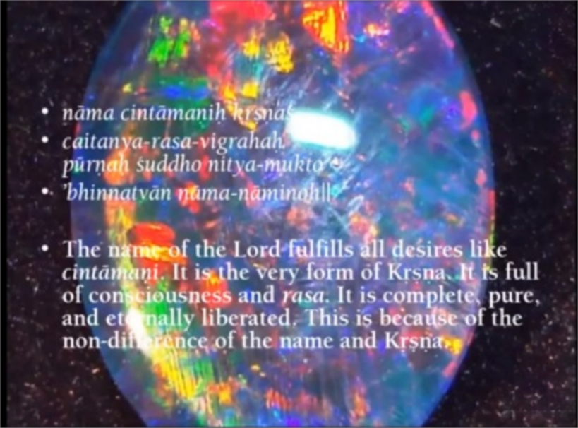
So this name of the work is derived from scripture. And we have this verse,
nāma cintāmaṇiḥ kṛṣṇaś
caitanya-rasa-vigrahaḥ
pūrṇaḥ śuddho nitya-mukto
’bhinnatvān nāma-nāminoḥ
This is found in Caitanya-caritamrta, comes from the Padma Purana. And it equates Krishna and his name as being Abheda Or Abhinna or non-different. And what is the significance? Krishna is Caitanya-rasa-vigraha. That means, he is the very form of spiritual rasas. Which is also mentioned in Nectar of Devotion. So the very first verse of Nectar of Devotion is akhila-rasāmṛta-mūrtiḥ (BRS 1.1.1). Krishna is the very form of all rasas. So this is Caitanya-rasa-vigraha, same statement.
And why is that important? Because ultimately any form of God is ultimately bliss. But bliss is only achieved by rasa. Rasa means a relationship of love. And that’s how Krishna and the devotee experience love, through rasa. If we don’t have rasa with the Lord, no bliss. No relationship. So we have a relationship with the Lord that creates rasa. Lord is blissful, devotee is blissful. And the essence of the Lord is bliss. Therefore, rasa also is intrinsic in the Supreme Lord. And it says Caitanya-rasa, because we also have material rasas.
So just as the center of the spiritual world is rasa, spiritual rasa, relationship. For the human being also, the center of bliss is rasa, relationship. So you establish a loving relationship with your mother, your father, your husband, your wife, your children, whatever, you get rasa. You get material rasa. And this is what people strive for in the material world. A nice, friendly, loving relationship. And they get that, then they have their material bliss. So we have material rasa. But this is spiritual rasa. Center of the rasa is Krishna. Not a mother, father, wife, children, etc. It’s Krishna [Laughs]. And there is no self-interest involved. It is pure. So, Supreme Lord is rasa.
Of all the forms of the Lord, Krishna is the highest expression of rasa. And therefore, he is called svayam bhagavān , the ultimate form of God. So, Krishna is the ultimate form of Caitanya-rasa-vigraha. He manifests, as Nectar of Devotion says, akhila-rasāmṛta-mūrtiḥ (BRS 1.1.1). He is the very form of all rasas. So there are five primary rasas and seven secondary rasas. And Krishna manifests these in full. Whereas other forms of the Lord do not. He manifests less. So, Krishna is the form of all rasas.
The name is non-different. The name also is full of all rasas. So you chant the name Hare Krishna, you can get all rasas. If you want, you can get Madhurya-rasa, or Vatsalya-rasa, or Sakhya-rasa, or Dasya-rasa, or Santa-rasa, or these secondary rasas [Laughs]. All from chanting the name. It’s non-different from Krishna. And then, consequently, what happens? You get the highest bliss.
So, Krishna is Purna. He is Purna, full of all rasas, full of all wonderful qualities. Of course, all forms of the Lord are perfect, but Krishna is the most, highest expression of that perfection. And also, we see even in Dwaraka, Mathura, and Vrindavan, Krishna is called Purna, Purnatara, and ultimately Purnatama. So, most perfect in Vrindavan. Even Krishna’s forms are all Purna, but he’s most Purna in Vrindavan. That’s the highest expression of Krishna’s rasa. And of course, Krishna in any form is more Purna than any other form of the Lord. So, Krishna is Purna, and we can experience that through chanting the name. Whatever powers, whatever qualities he has, are available in chanting his name.
Krishna is Suddha, which means pure. He has form, qualities, and activities. Some people will say, well, if God has a form, he is limited. If he has qualities, he has material qualities. So, how can he be God? So, they say, God has no form, no qualities, no activities. That’s Brahman [Laughs]. That’s supreme. If he has qualities, that’s not really pure. However, Krishna has form, qualities, and activities, and he remains pure. Not limited in any way by qualities, or form, or activities. And, by chanting the name of Krishna, you can realize form, qualities, activities of Krishna, which are unlimited. So, name is non-different.
And nityamukta, though Krishna appears in the material world, and he’s visible to the people, he is never contaminated by the material world. So, the name also appears within the material world. People can hear the name. Even if they have material ears, they can hear the name. But, name itself is not contaminated. It remains pure like Krishna. So, in this way, name is non-different from Krishna very, very powerful.
And, what does Cintamani mean? Cintamani is a particular stone. Of course, the normal Cintamani is material. We don’t have this material stone nowadays. But, in ancient times, they had this particular stone, and it could grant your material wishes [Laughs]. But, Krishna is the spiritual touchstone. He can give any material benediction. Whatever you want – house, car, television, whatever. Job, children, family, material happiness, Svargaloka, Brahmaloka, whatever. He can also give, superior to that, he can give the bliss of liberation, mukti. But, he can also give prema. So, he can give all these things. Krishna is in this way Cintamani. And, the name also is like that. He can give everything. Material benedictions, liberation, and prema. So, name is very special.
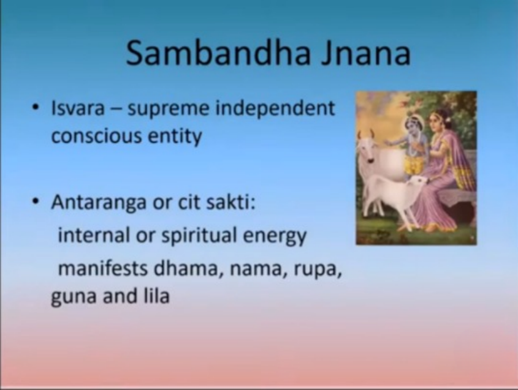
So, to begin the work, speaking through Haridas Thakur, we have an explanation of Sambandha-jñāna , which is basically philosophy. So, generally, people don’t like philosophy too much. And, they’d rather skip the philosophy part [Laughs]. Go on to lilas and things like that. But, we see that all of our works are heavily philosophical. So, if you read Bhagavad Gita, you read the introduction, it’s full of philosophy. If you read the purport, full of philosophy.
So, why we need all this philosophy [Laughs]? But, that is because there’s other people who have other philosophies, which are completely opposite. And, if you believe those philosophies, you cannot get bhakti, you cannot get prema. So, therefore, we have to have correct conceptions when we do our bhakti. Otherwise, we go in the wrong direction.
So, therefore, we do have to have a philosophy. We have to have a definition of God, a definition of jiva, etc. Very clear. And, other people who have other philosophies will have completely different definitions of these things, and they get different results. So, in that sense, we do need this philosophy.
Fortunately, the philosophy is very simple. It’s not very complex. We have to define what actually exists. This, of course, is maybe a strange question for people in the material world.
Well, I exist, the world exists. We don’t think about it too much. But, in Indian philosophy, this is a very important question. Because, we have one of the major philosophies, that is Shankaracharya’s Advaita philosophy, which is nothing exists except Brahman. Material world doesn’t exist, you don’t exist. Only Brahman exists. So, that’s the definition of existence. Everything is illusion. Everything you see here is illusion. Only Brahman exists. And, with that philosophy, there is no Bhakti, there is no Prema, there is no Krishna. Because that Brahman has no form, qualities, or activities. And, there is no Jiva, there is no Rasa, nothing. So, if you believe that, it’s difficult to chant the holy name and get Prema. You cannot get Prema. So, we can’t have that philosophy, we have to have a different philosophy.
And, there are many other philosophies also, which say, oh, world is not illusion, it is real, but, still, God has no form, qualities, and activities [Laughs]. So, again, we’re stuck. So, therefore, our Acharyas, and, of course, all Vaishnava Sampradayas, put an emphasis first upon establishing what is real, and what is the relationship of real things. And, upon that, we can establish Bhakti. So, this is called Sambandha-jñāna , or knowledge of relationships.
So, we have simple classifications. What is real? Supreme Lord is real, Ishvara, Parameshvara. Supreme Lord is real. Not only He is real, He is independent. He is supreme. He is the number one, controller, knower, etc and, He is conscious. So, this is one entity, real. And, He has form, qualities, and activities. If we can accept this, it’s good. One forward step [Laughs]. Instead of God has no qualities, form, activities, or God does not exist.
So, we have a supreme conscious entity, supreme being called Ishvara, bhagavān , Parameshvara, etc. But, that’s not enough. We need other things besides a supreme Lord.
So, we have three śakti’s that produce three other things. We have Antaranga śakti , or Cit śakti , or Svarupa śakti . It’s the internal energy of the Lord. This is the spiritual energy of the Lord. This is the Lord’s most important energy. It manifests the spiritual world. If we have the Lord but no spiritual world, what can He do? No pastimes, nothing. This energy will manifest the Lord’s name, form, qualities, and activities. So, very important.
If we don’t have the śakti , we end up with impersonal Brahman. But, by this śakti , we end up with a spiritual world, with supreme Lord, with form, qualities, activities, rasa, etc. So, very, very important. And, the śakti is real, and the manifestation of spiritual world, form, qualities, activities is real. So, we have an attractive supreme Lord, upon which we can meditate, upon which we can concentrate our devotion.
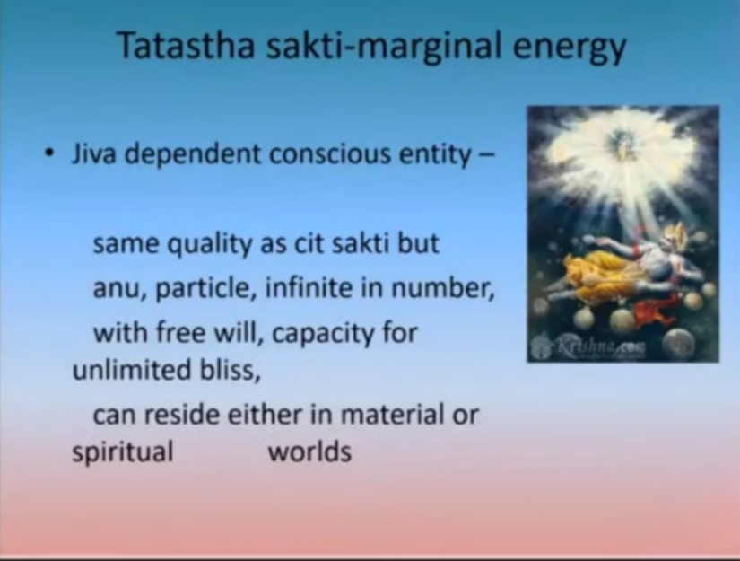
But, we need other things. What do we need? We need Jivas [Laughs]. If we don’t exist, only the supreme Lord exists. There is no Bhakti. Supreme Lord all by Himself in the spiritual world. What is that? Nothing [Laughs]. So, we need other entities. So, this is the work of the Tatashta śakti , or the marginal energy. This manifests Jivas. Jivas are like the Lord. They are also conscious. They can experience. They have a sense of I. They can choose things. They can do things like the Lord, but dependent on the Lord. That is the big difference. And, they are like small little particles. So, they don’t have the same capacity of knowledge, action, etc. that the Lord has. So, there is a difference. Similar, but also different.
Lord is one. One supreme Lord. He can have many forms, etc., but He is actually one bhagavān , one Ishvara. We don’t have two, three, four, five Ishvara’s. Only one Ishvara with many forms. Jivas are many, not one. We have infinite number of these conscious particles, Anu. And, they can worship the Lord. They practice devotion. They can experience Prema.
And, that combination of the Lord with the Jiva gives the Lord bliss. So, the nature of the Jiva, because He is less than the Lord, He is a small particle, He is dependent on the Lord, manifests some knowledge, some action, etc. He can make mistakes. So, He can choose spiritual world or material world. That’s why He is called Tatashta, borderline. He can go either way.
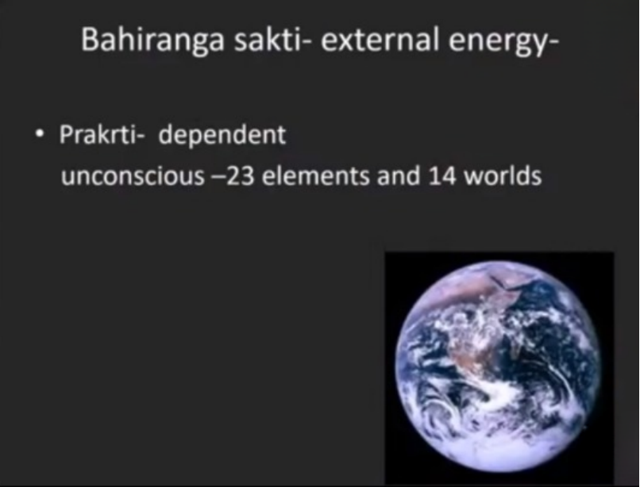
Third energy, Bahiranga śakti . This is material energy. So, we have three energies. Energy which produces spiritual world and the form and qualities, activities of the Lord. We have second energy, Jivas, who worship the Lord or not worship the Lord. And, we have Bahiranga śakti . So, the Jiva can choose Bahiranga śakti also. I will enjoy in the material world. So, this external energy manifests all the elements, gross elements, subtle elements, etc. Manifests worlds, planets and bodies. And, the Jiva, if he chooses not to worship the Lord, enters into this world and tries to enjoy. And, of course, he is subject to karma, etc.
But that’s basically our philosophy. All these things are real.
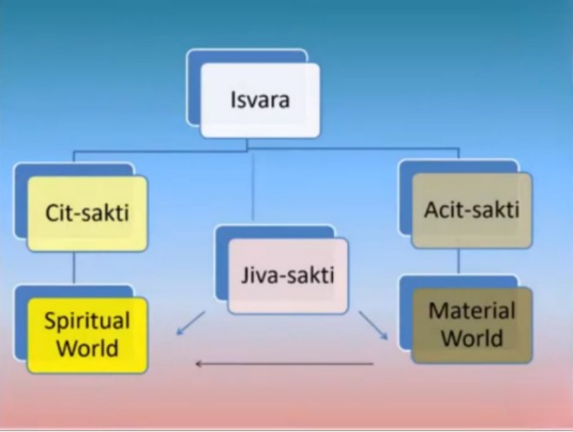
Supreme Lord is real at the top, Ishvara. His Cit śakti is real. It produces a real spiritual world. The Lord has real form, qualities and activities. The Jivas in the spiritual world also have real form, qualities and activities. We have the Jivas. They are real. In Shankaracharya’s philosophy, Jivas are not real. They are illusions. We do not really exist. We are illusory. Only Brahman exists. So, we say, no. Jiva, these small particles are real and eternal. Never change. But, the Jiva is Tatashta, marginal, in spiritual world or material world. And, we have the Acit śakti , which manifests that material world. So, the Jiva, if he chooses not to worship the Supreme Lord, to recognize the Lord, then he still wants to enjoy, get some bliss. So, he enters material world and tries to get his bliss through a material body. So, this is where we are at, in the material world. And, we take birth after birth. To help us, as Jivas, get out of the world, get out of the material world and get to the spiritual world [Laughs], we have different processes mentioned in the Vedic literature. This is the purpose of scripture, to get us out of the material world.
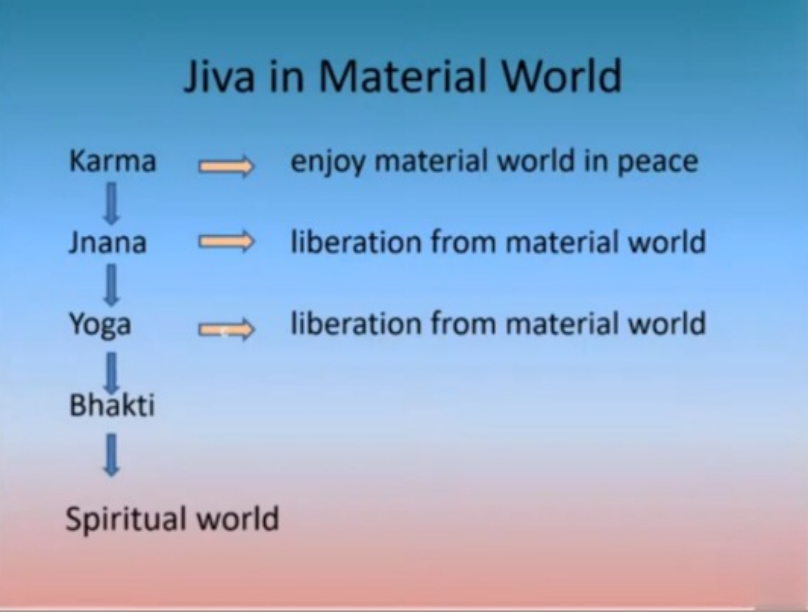
So, we have different processes. I mentioned this morning, that we have Karma Yoga, Karma Kanda, etc. That’s the first process, authorized by the Lord. It disciplines you, gives you rules, helps you avoid sinful activity, and doing pious activity. So, you can minimize your suffering birth after birth and get more material happiness. So, it is limited. Karma Yoga does not promise anything except material world, but better material world. So, you can get material peace, but you are still subject to birth and death. But, it is one step forward, because at least we avoid sinful activities.
Higher than that is the process of Jñāna Yoga. If you reach sattva-guṇa through Karma Yoga, you are qualified to do Jñāna Yoga or aṣṭāṅga-yoga . Both of these processes can get you out of the material world, and get liberation. So, here, if you do Karma Yoga, you stay in the material world, stuck there, but you can go upwards and go to Brahma Loka. If you practice Jñāna Yoga or aṣṭāṅga-yoga, you can get out of the material world, but you don’t get to spiritual world. You are kind of in between [Laughs]. That’s liberation state. Out of the material world, not in the spiritual world.
If you want spiritual world, you have to do Bhakti Yoga. Then you can get to spiritual world. So, that is why of all these different processes, Krishna recommends process of Bhakti Yoga.
That’s the direct process to get to spiritual world. All the other processes are indirect. And then after you finish them, you have to get to Bhakti Yoga eventually.
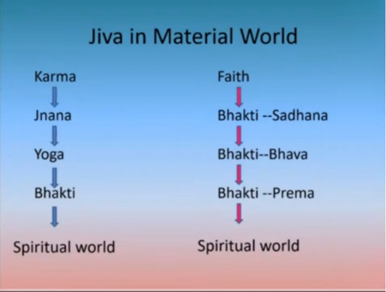
So, you can follow the gradual process, and do Karma Yoga, Jñāna Yoga, aṣṭāṅga-yoga , Bhakti Yoga, get to spiritual world. It’s a long process. Very difficult to do, because Karma Yoga also is very difficult to do in Kali Yuga and Jñāna Yoga is very difficult also. So, Krishna recommends other processes. Don’t go through the gradual process. Just take to Bhakti. And through Bhakti, you progress to the spiritual world, without going through all these other processes taking many, many lifetimes. So, that is the process recommended by Krishna in Bhagavad Gita.
Only qualification is faith. It does not require that you come to sattva-guṇa. You can start from tamo-guṇa and do Bhakti. Of course, if you continue tamo-guṇa , it’s not good. You should go beyond the guṇas by Bhakti [Laughs]. But at least, you’re not disqualified from doing Bhakti if you’re a Mleccha, or a hunter, or whatever like that. We have example of Narada Muni saving the hunter, who was killing animals, etc. Very tamasic. But, Narada Muni told him to chant the holy name, and he surpassed Sattva. He got Bhava, and then Prema. So, qualification is faith only, and faith does not depend upon the guṇas of material nature. So, if we can instill faith, anybody can practice Bhakti.
So, Bhakti goes through stages. We have Sadhana, Bhava, and Prema. With Sadhana, you’re not qualified for the spiritual world. You have to get to Prema. But if you start Sadhana, then you can get to Prema. So, we do Sadhana, go to Bhava, get Prema, then we’re qualified for the spiritual world. So, good process. So, Caitanya Mahaprabhu makes it even easier.
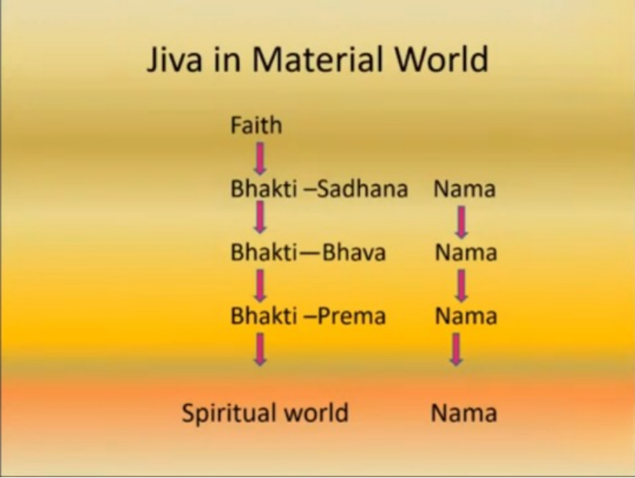
In Bhakti, we have chanting the name, Nama. So, this becomes our main Sadhana. And through that, chanting the name, we get to Bhava. In Bhava, we chant the name of the Lord, we get Prema. In Prema, we chant the name, and we go to the spiritual world. And in the spiritual world, we continue chanting the name [Laughs]. So, as we see, it’s eternal. Bhakti is eternal. We don’t give it up for any other process. Bhakti in the spiritual world, Bhakti in the material world. Name in the material world, name in the spiritual world. So, we never give up Bhakti and chanting the name, eternal processes.
So, Bhakti is, of course, the general term, but chanting the name is the easiest and the most powerful process in Bhakti. Some of the processes, like deity worship, require some qualification, but the name does not. And, even if you do the other processes of Bhakti, ultimately, you should also chant the name. So, therefore, the name is considered to be the main process for us, for getting to the spiritual world. And this is what is taught by Caitanya Mahaprabhu.
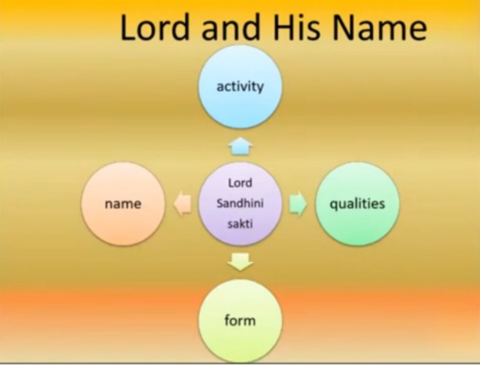
So, how does the name manifest? So, the Lord has his internal energy, first energy. Part of that energy is called the sandhinī śakti . So, the sandhinī śakti manifests spiritual dhām of the Lord, like Goloka. It manifests the Lord’s name, form, qualities and activities. Very important śakti .
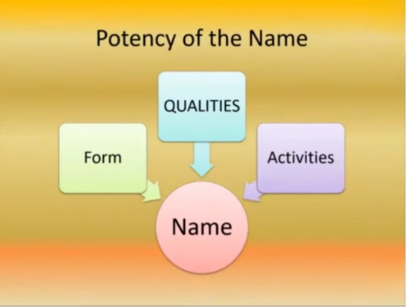
However, name is very special, because in the name, we also have form, qualities and activities of the Lord. So, by chanting the name, we can realize everything. Name, form, qualities, activities, rasa, etc. Pastimes and everything.
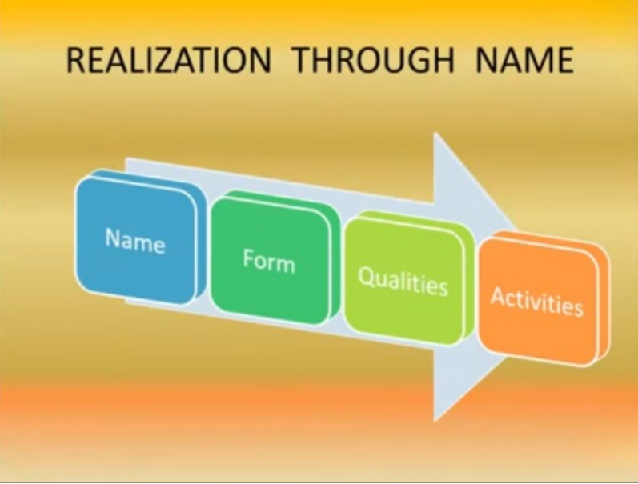
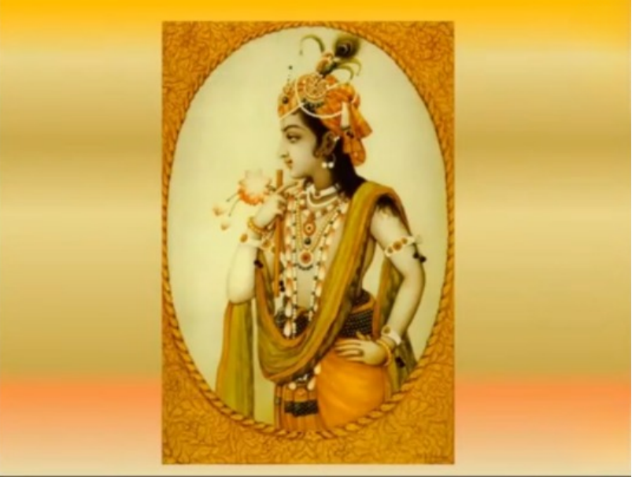
So, without having to do anything else, just relying on the name, we can get our full realization of the Lord. And so, we can realize Krishna and all those wonderful activities in the spiritual world. So, very, very powerful process, easiest process.
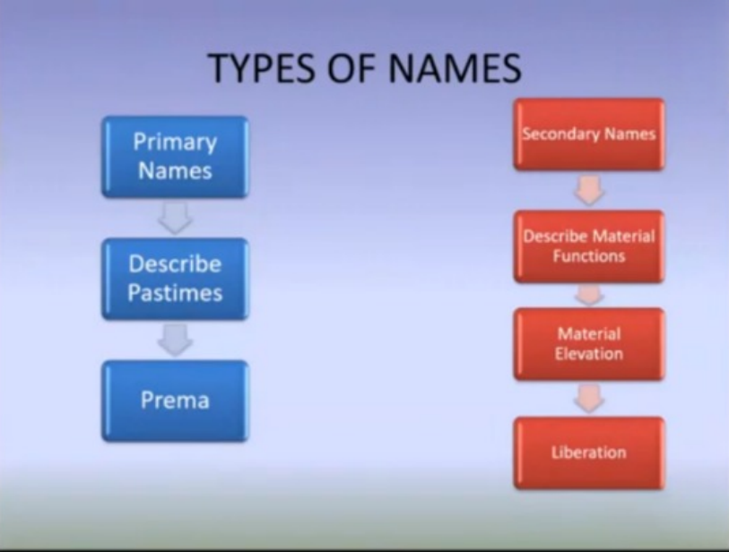
So, there are different types of names of the Lord. Some names, called primary names, will describe bhagavān in the spiritual world with his pastimes and his form and his qualities, like Shyamsundar, Gopal, Govinda, Giri Govaradhanadari. These describe the Lord in the spiritual world as Bhagavān . So, if we chant any of these names, we can get Prema. Other names are more general, describing the Lord as Brahman or Paramātmā , as the creator, as the witness of all our activities, as being omniscient, etc. These are not wrong, they are correct designations of the Lord, but they describe the Lord in a more general way, and not particularly the Lord in Vaikuntha or Goloka, performing pastimes. Rather, they illustrate the Lord in the material world, knowing everything, creating everything. So, they’re spiritual names, but they don’t give the same result. So, they can liberate you from the material world, but they don’t give you Prema.
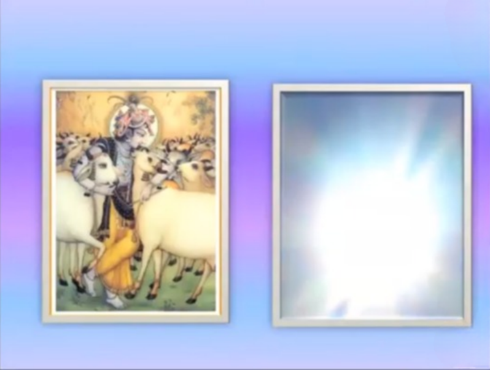
So, therefore, we want to choose primary names, to get to the spiritual world and worship the Lord and experience Prema there, not enter into Brahman or anything else.
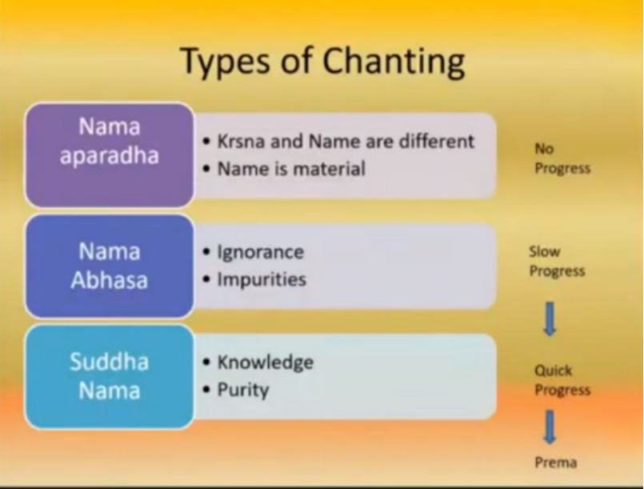
The name is there, but we can chant the name in different ways, and we get different effects. So, we all know about nāmāparādha. We avoid nāmāparādha like anything, because it can destroy your bhakti. So, it is not favorable at all. It is the opposite. Unfavorable [Laughs]. So, in nāmāparādha, we conceive of the Lord and his name as different, or the Lord has no spiritual form, and I chant the name to get liberation, or something like that.
Name is material. All these misconceptions are there. And basically, we’re rejecting Supreme Lord, bhagavān. So, we don’t get any progress from that, so we have to avoid that completely.
Another form is called nāmābhāsa, which I will discuss later. Nāmābhāsa is chanting, and we don’t have a deliberate attempt to say, God has no form, God has no qualities, bhakti is material, etc. God does not exist. We don’t say anything like that. But out of ignorance, we have many misconceptions. God has some form, but it could be any form or whatever, and we have some impurities, and we may have a mixed type of bhakti in chanting. We chant, but we don’t know what prema is, so we are asking for material benefits. That’s called nāmābhāsa , like a reflection of the name.
So, it gives results, like the sun covered by clouds, still gives light, but doesn’t give full light. So, name with its ignorance and impurities gives some result, not full result. So, if you chant like that, you can get effect, you can get purification, and you get slow progress, but you don’t get prema. You can get up to liberation. Of course, this nāmābhāsa, has two types. One is accidental chanting, like Ajamila. No offense, but ignorance also, and he just accidentally chants because he names his son Narayana, and he gets all of his karmas removed. So, it’s quite powerful in that sense, but it doesn’t get prema in itself.
The other type of nāmābhāsa is, not by accident, but you’re chanting intentionally, but kind of with ignorance, etc. So, we have many groups of people in India. They’re doing kirtan and whatever, but why are they doing the kirtan? We’re doing kirtan because this is our family tradition, or whatever everybody else in the temple is doing it, I’m doing it also, but you don’t know what they’re thinking in their mind when they’re doing it [Laughs]. We’re doing it because, you know, we want to get some money or whatever, and be prosperous in the material world. So, this is nāmābhāsa also. Slow progress, you can get some progress, but it doesn’t give the final result.
So, if we want, chant the name, and we want to get prema, and want a quicker process, we have to have Suddhanama, pure chanting. That means we have to get the knowledge, we need the Sambandha-jñāna again, we have to make the distinction between God and Jiva and property and all this, and as much as possible, we have to avoid asking for material benefits or for liberation. So, pure bhakti. Then, we get quick progress, and we can get prema. So, that’s why in Nectar of Devotion, Rupa Goswami is mentioning, at the beginning, we practice Uttama Bhakti or Suddha Bhakti to get prema. So, similarly, in chanting the name, we have to do Suddhanama, not nāmābhāsa , in order to get prema. There’s another interesting pastime to illustrate about Suddhanama or pure chanting.
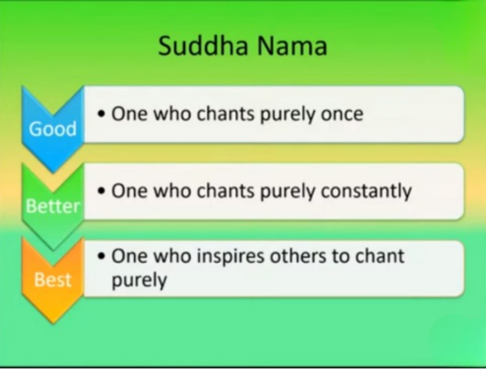
After Lord Caitanya went to Puri and stayed there, the people of Navadvip were so much separated from him, that every year, they would walk to Puri, which would take about two weeks, and they would stay there for four months, and then they would return to their jobs and whatever, and stay the rest of the year in Navadvip. And they do this every year. So, one year they went, and then they asked Lord Caitanya, who is the Vaishnava? And Lord Caitanya answered, anyone who chants the name of the Lord once is a Vaishnava. So, they were rather surprised. How can that be [Laughs]? Just chant once and you’re a Vaishnava? So, they were wondering about this, but they didn’t object or criticize Caitanya Mahaprabhu. So, they kept quiet. And they went back to Navadvip. But then when they were there, they were asking, why did Lord Caitanya say this? How can you be a Vaishnava just chanting once?
So, they were discussing for eight months. What does this mean? So, they made a plan. And then they went the next year. And they asked the same question, who is a Vaishnava? And they waited for an answer. What’s he going to say? Same answer or something different [Laughs]? So, then he said, anyone who chants constantly, he is a Vaishnava. Ah, so they were satisfied. Yeah, that’s nice. Chant always, then you’re considered Vaishnava. So, then they went back to Navadvip. But then they thought, well, why did he give two different answers? Did he forget first time or make a mistake or whatever? So, they were a little bit puzzled by that. And they discussed among themselves.
And then they went back the next year and asked the same question, who is a Vaishnava? And then Lord Caitanya said, one who inspires others to chant purely, he is a Vaishnava. So, then they understood. Oh, Lord Caitanya has given us three definitions, three grades of Vaishnava.
- One who can chant purely once.
- One who can chant purely constantly.
- And one who through his pure chanting can make everyone else enthusiastic to chant [Laughs].
So, therefore he gave three types of Vaishnavas, all chanting purely.
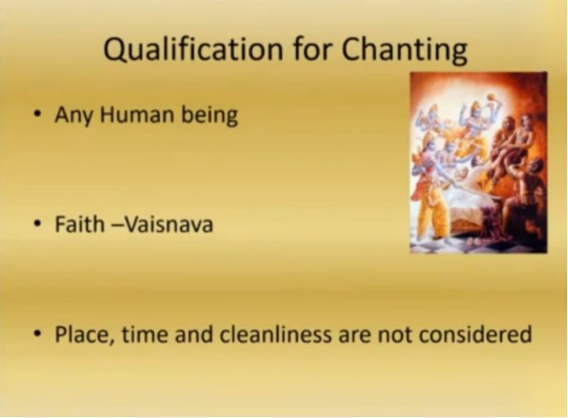
So, what is the qualification for chanting? In one sense, any human being can chant. And they can get some effect. But, if you chant accidentally, you can get effect. In fact, if you chant accidentally with no aparadhas, you can get even more effect. That was the case of Ajamila. He chanted, not because he had any faith or anything. He chanted more than once, but also didn’t have any aparadhas. So, the first time he chanted the name Narayana, all of his karmas, past, present, future got destroyed, very great effect. He did better than Jnanis and Yogis, who strive for liberation, for thousands of years. In one second, he got more than they got, simply by accidentally chanting.
So, that’s there. But, of course, when we talk about chanting, we’re more interested in people who seriously chant. That is the Vaishnava. But the Vaishnava to chant seriously needs proper faith. He must have conviction in Vaishnava scriptures. And when we hear the scriptures, we do not argue. Why Krishna says this? I don’t believe it [Laughs]. We’re willing to accept. We may not understand, but we’re willing to accept and follow the orders given in the scriptures, the Bhakti scriptures, that is. So, faith is the qualification for practicing as a Vaishnava. That conviction.
But, other than that, chanting is quite liberal. It doesn’t require varnas or ashramas. You could be in any varna or no varna. You can have any ashrama or no ashrama. Place, any place, any time, clean or unclean, name will have effect. So, this is quite different from karma, Jñāna , and yoga. They all have particular times, places, cleanliness, etc. rules. Name, no. It won’t have effect in all these cases. So, that is why the name is recommended in Kali Yuga. So, in order to chant properly, to get prema, we do have some conditions [Laughs].
Name is free, but still, for prema, conditions are there. One primary name, not secondary name. And, of course, in Lord Caitanya’s movement, we generally chant Hare Krishna. We chant pure name instead of nāmābhāsa . And, of course, we avoid nāmāparādha . And, instead of chanting once, we try to chant constantly. The more chanting, the better. And, to get suddhanam, and to chant constantly, we need association of devotees, by which we can also get proper knowledge. Along with that, we have favorable actions, such as, four regulative principles, etc., which are favorable for development. And, we avoid unfavorable things. So, we follow these basic principles, then we get to prema.
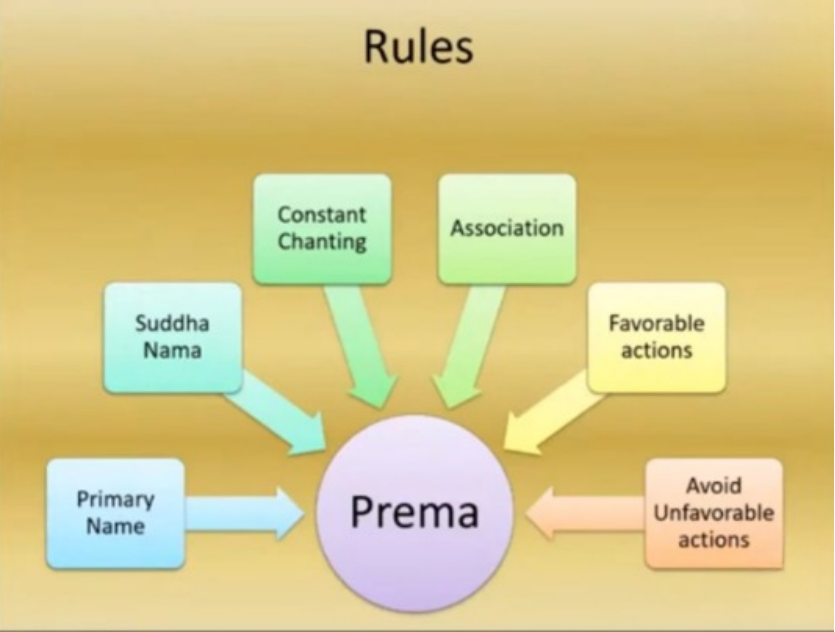
Okay. Okay. Any question there, or should I go on? Yeah. Okay.
Q & A
1) Maharaj, could you please explain in detail about Nama aparadha and nāmābhāsa ?
Well, I’ll discuss this in the next section. nāmābhāsa , nāmāparādha , and all that. Actually, the whole work, the first two chapters is this general philosophy, next is nāmābhāsa . The rest of the book is the aparadhas [Laughs]. Each aparadha. One chapter for each aparadha of the ten aparadhas.
2) Maharaj, to cultivate taste for chanting constantly, can we chant more rounds even if we dont have taste now or engage in reading Bhagavatam etc ?
Yeah. Well, there’s no set rule for chanting. And, if you engage in other devotional processes, no problem with that. Also, if you stop chanting to do material things, okay, that’s not so nice [Laughs]. So, somehow, we engage in devotional activities as much as possible.
Now, constantly chanting, of course, ultimately means 24 hours a day, and that’s impossible for us. Maybe for, you know, Haridas Thakur, he chanted, what, probably 20 hours or something a day [Laughs]. Still, he had to sleep and whatever. So, absolute constant chanting maybe is in the spiritual world when we have a spiritual body, but in the material world, we do as much as we can. Still, even that, we’re not expected to do everything immediately, and it’s according to qualifications. So, we cannot artificially strive for chanting 64 rounds or 120 rounds or whatever and think we’re better because of that also. It’s according to our capacity.
If our enthusiasm is there and we chant attentively, fine, we can go on chanting as much as we want, and it may be, you know, 64, 82 or 90, whatever, but it’s our ability to concentrate more than anything, not that we force ourselves because we want some standard for fame or whatever.
3) You’re mentioning Suddha nama, that we shouldn’t ask for anything, for Suddhanama.
HH Bhanu Swami Maharaj : Ask for service to Krishna atleast.
Devotee : So, if we ask for something material, for example, for help, for service, is that considered asking?
HH Bhanu Swami Maharaj : So, that’s explained in Nectar of Devotion in discussing this definition – anyābhilāṣitā-śūnya, jñāna-karmādy-anāvṛtam. So, technically, anyābhilāṣitā -śūnya means this bhakti should be devoid of other desires, which means we have a desire to please Krishna and serve Krishna at all times, that’s a good desire. Other desires, desires for material things, liberation, yoga siddhis, etc., we don’t want. That’s a general definition. But, our Goswamis also point out that in this definition anyābhilāṣitā-śūnyaṁ, Rupa Goswami does not say anyābhilāṣā-śūnya, which would mean devoid of any other desires. He says anyābhilāṣitā, generally.
So, in general, we are devoid of other desires. So, then, why would he say that [Laughs]? So, the answer is, well, you can have a few other desires [Laughs]. Once in a while, not constantly, once in a while you can have desires. So, if you’re in danger and you say Krishna save me, that’s not actually devotional because we’re thinking of our body, but it’s an accidental situation, and ultimately we save our body so we can serve Krishna. So, such a desire and saying Krishna please save me, does not interfere with your pure bhakti. So, occasionally we can pray for material things, for ourselves, for other people, whatever, but if it’s constantly there, then that becomes impurity. So, they can be occasional. A request to the Lord, like Draupadi [Laughs] calling out , please save me Krishna. Yeah.
4) Devotee : Question not audible
Okay. So, faith is the initial qualification. If we don’t have any faith, then we don’t have any belief in the scriptures, so we’re not going to follow anything, so we don’t do any bhakti. So, we need a little bit of trust, at least. Okay, yes, I’ll accept Bhagavad Gita, and I’ll try to follow, and then we begin. As we do bhakti, that faith becomes stronger and stronger. Our conviction in the scripture becomes stronger. Our conviction that Krishna exists becomes stronger. By progressing in bhakti, chanting, worshipping, and doing other processes of taking prasadam, all this will help us deepen our faith. So, as our faith deepens, when we read scripture, our knowledge of scripture will also become deeper, and consequently, our faith will become deeper. So, there is a relationship between knowledge of scripture and the development of faith also. So, by doing that, developing our faith and developing our knowledge, we can reach a certain stage which is quite good. That is deep faith, along with logical ability to explain scripture nicely, and then, with that, we can actually convince other people to take to the process of bhakti. So, faith starts as a qualification, and it continues, and it deepens as we perform devotional service. So, it goes along with the bhakti at all times.
5) Devotee : Question not Audible
HH Bhanu Swami Maharaj : Yes. So, if you actually experience the Lord, then, obviously, you believe in the Lord completely [Laughs], so there is no question of your faith deviating, and you get to prema, then, of course, the experience is condensed bliss. So, at that stage, the faith is intrinsic to the jiva.
6) Devotee : Maharaj, you mentioned about even inattentive chanting is better, how to understand that ?
Well, inattentive chanting, of course, is chanting is better, inattentive chanting is better than no chanting, attentive chanting is better, and chanting with knowledge is very good. So, if we get knowledge from Bhagavad Gita, and we understand who is Krishna, who is jiva, what is pure bhakti, etc., the chanting becomes better. So, and, of course, if we do that, we can also become more attentive in our chanting. So, knowledge is quite important, that’s why we do stress books a lot, more than other groups [Laughs]. Other groups, you know, they have many people, but no books [Laughs]. We have a lot of books [Laughs], more than anybody else. It looks a little strange, because we emphasize this so much, it looks like we’re not doing devotional service, or trying to be philosophers, or something [Laughs], but this is kind of inherent in traditional sampradayas, to emphasize knowledge.
So, if you go to the Madhva Sampradaya, they have all these books and philosophies, or the other sampradayas, so we also have plenty of books, etc. But that does not negate the fact that the books are there to help us develop our devotion. So, devotion is the main thing, and the knowledge is part of that devotion, that helps us deepen that devotion.
Part 2 – Nāmābhāsa
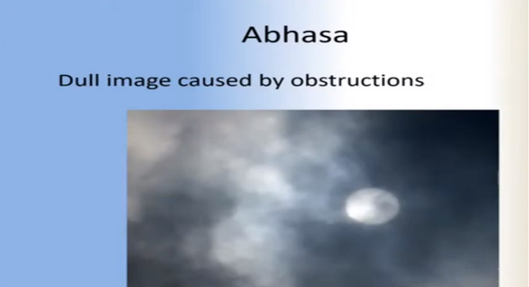
Okay, let’s go on to nāmābhāsa. So, here’s this quote from the Caitanya Caritamrta. A devotee never accepts mukti, even if Krishna offers it. Mukti, freed from all sinful reactions, is obtained even by nāmābhāsa . So, there he mentions nāmābhāsa , or this, actually a shadow of the name even that gives liberation.
So, Ajamila, who was sinful, had nāmābhāsa , and also accidental chanting, he had no knowledge or anything. He destroyed all of his karmas, he was fit for liberation. So, that’s very, very easy to achieve good results from nāmābhāsa. Nevertheless, that’s not our goal [Laughs]. Liberation is not our goal, and therefore nāmābhāsa is not our goal.
So, there are many people who practice devotion, or say, I’m doing bhakti. There are many people also chanting the name of the Lord, doing kirtan, or whatever. But, they may be chanting differently. So, we have to recognize the difference. Some are chanting purely, some are doing nāmābhāsa, some may be doing nāmāparādha . So, we have to make some distinctions there, between the people. To do that, we have to understand, what is this ābhās?
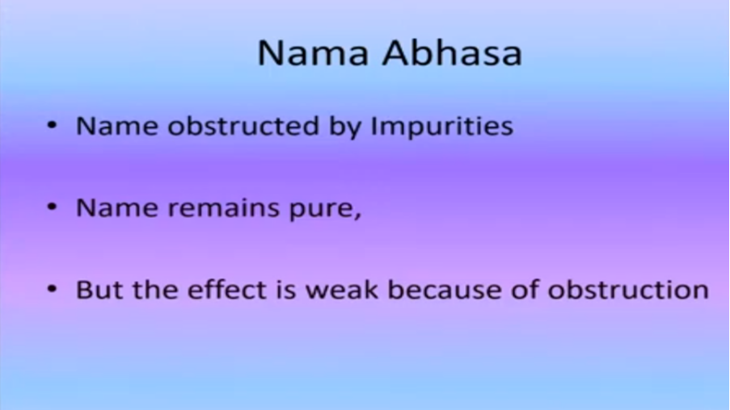
So, an ābhās is a dull image caused by obstructions. So, on a cloudy day, like today, it’s daytime, and the sun is shining, but we can’t really see the sun somewhere up there. Maybe if we look closely, we’ll see a little spot in the sky that looks like the sun. So, that’s the ābhās of the sun. It’s up there somewhere, and there’s a little bit of an image of the sun. It’s not very clear. But nevertheless, it is the sun, and we’re getting some light. Like that. So, the clouds obstruct the sun, and cause this ābhās of the sun.
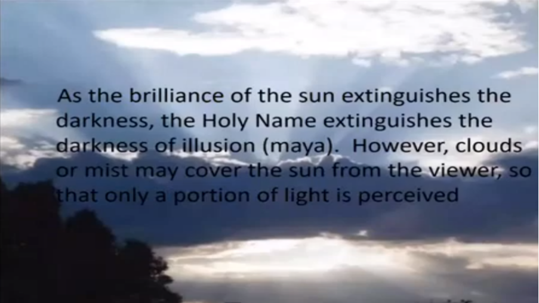
So, similarly, we have the name. The name is like the sun, and then we have obstructions [Laughs], impurities. So, the name is there, we have the impurities, we get some effect, as the sun on a cloudy day. Some effect is coming, not the full effect. At the same time, the sun is in the sky, the clouds are there. If we go up on an airplane, there’s no clouds. We’re above the clouds. So, the name is not really affected by this impurity. We are [Laughs]. We get the result. Just as the sun is always the sun, but if we got the clouds in between, we don’t get the full effect of the light. So, because of our impurities, we don’t get the full effect of the name. That doesn’t mean there’s anything wrong with the name. That means we got impurities. So, because of the impurities, the effect of the name is weak. So, the sun extinguishes darkness, holy name can extinguish illusion and maya, etc.
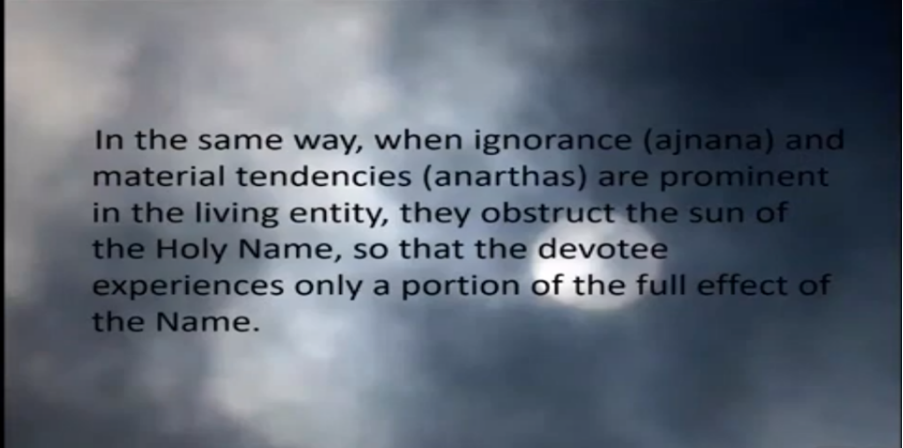
If the clouds cover the sun, then we get only a portion of light. So, if we chant the name, but we do have coverings, ignorance, anarthas, etc., we get partial effect only, like cloudy sky. Better than nothing, but not the best [Laughs]. So, therefore, the devotee will only get a partial experience of the name, because of this covering, because of nāmābhāsa.
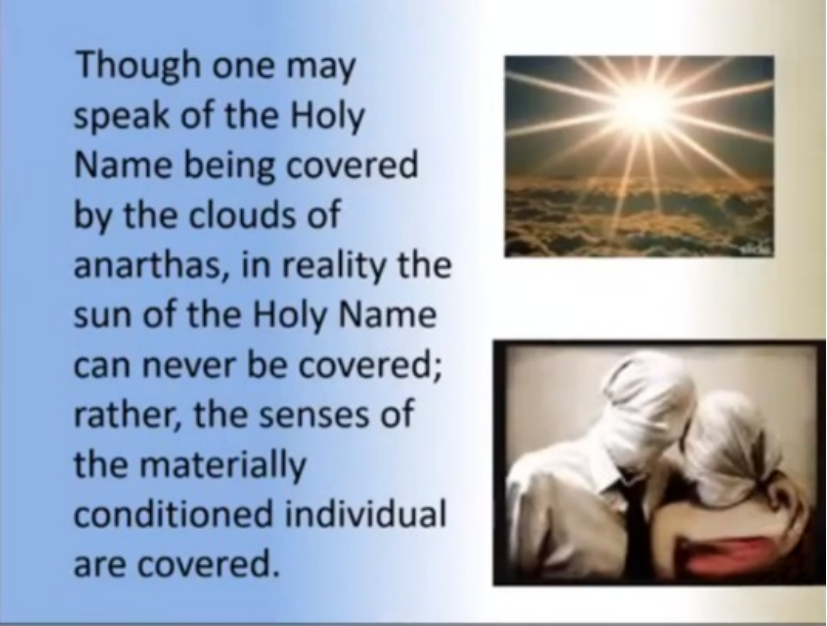
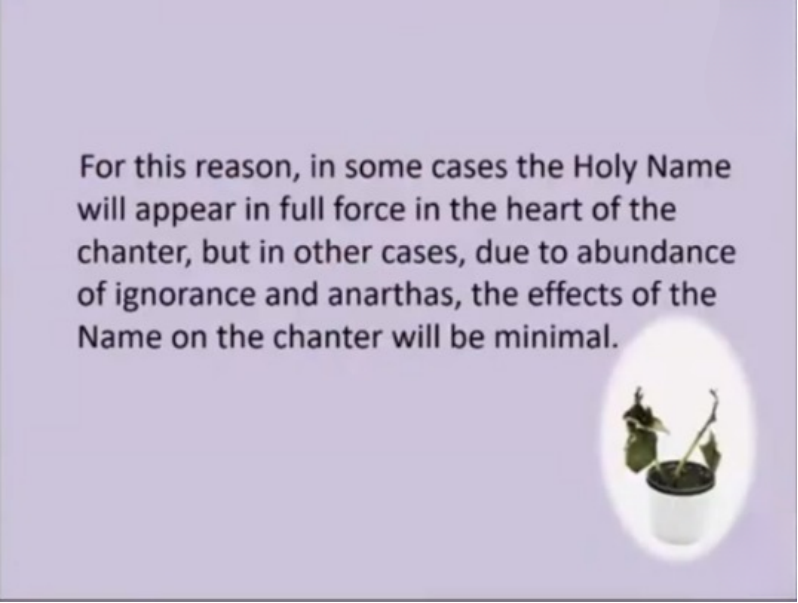
So, as I said, the name actually really cannot be covered. It’s always pure, like the sun is always shining full in strength. But, from our point of view, our senses are covered, our mind is covered, then we get the effect. So, we say it’s the covered name or nāmābhāsa, it’s actually name is intact. It’s just we have the ābhās, which creates this. Because of that, different people will get different effects from chanting. Some have more ābhās, more covering, some have less covering. And therefore, the name will have different effects on different people. Some people chant, they get quick effect. Some people chant, very slow to get any effect. So, that’s caused by the amount of covering.
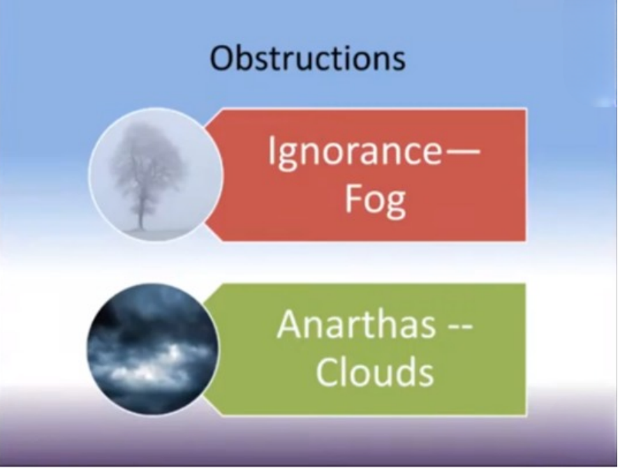
So, Bhaktivinoda Thakur says there’s two types of obstructions or coverings. One is ignorance, we compare that to fog. The other is anarthas, or material desires, which are like clouds. So, two types of things.
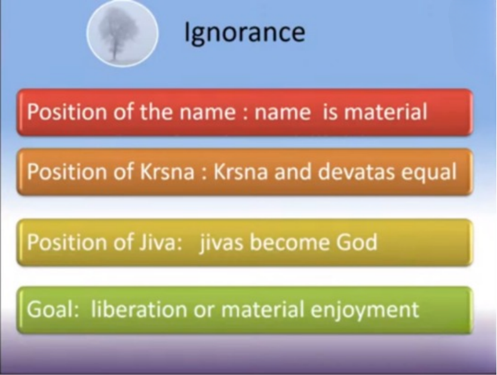
What is the ignorance? One, ignorance of the position of the name. So, we have the name of the Lord and we’ll say, oh, the name is material. It just gives material results. So, that is ignorance of the name. Ignorance of Krishna. Krishna is a material being. Krishna is a devata. Krishna’s got a material body. That’s, again, ignorance. Position of Jiva. Jiva’s become God. This is Mayavada philosophy. No Jiva’s exist, they ultimately become God. So, this again is ignorance.
And, what is the goal? If we think it’s liberation or material enjoyment, that is also another type of ignorance. So, these types of ignorance obstruct the power of the name. If it is deliberate, as in some philosophies will claim God has no form, Krishna does not exist or whatever, Jiva’s don’t exist, if it’s inherent in the philosophy you’re following, then it becomes aparadha [Laughs]. It’s not just nāmābhāsa anymore, it becomes aparadha. If it is just out of ignorance we’re doing, that’s just the case of Ajamila didn’t know what he was doing [Laughs], then it is called Abhas. And, some people who are not doing accidental chanting, they’re actually chanting deliberately, but they don’t have any scripture to follow, then they may have so many misconceptions, not because they’re envious of God or anything, but simply they’re ignorant. So, this is what the nāmābhāsa is. It gives you an effect but weaker effect.
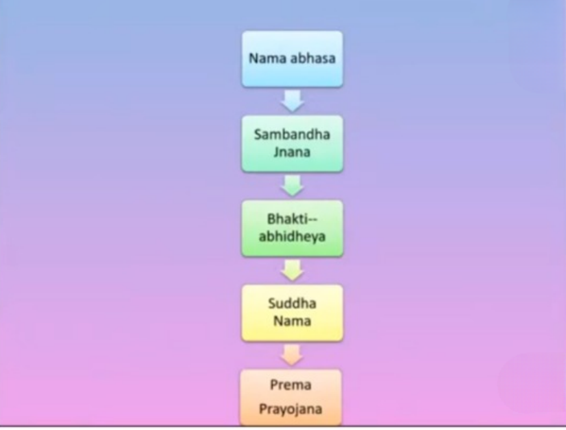
So, this type of ignorance, how do we clear it up? Knowledge, easy [Laughs]. And, we get knowledge, ignorance is gone. So, that’s why we have this philosophy [Laughs]. To clear up the ignorance, to get rid of the nāmābhāsa . So, we have the correct philosophy. We understand the name is non-material, non-different from Krishna. We understand position of Krishna. He’s got form, qualities, and activities which are spiritual, not material. He is supreme. We understand position of Jiva. Jiva is small particle dependent on the Lord, and we practice Bhakti, we are eternal servant of the Lord. And, the goal is not liberation, not enjoyment, not prema. So, that of course, if we have Sambandha-jñāna , then very easily this type of ignorance is cleared up. So, that’s why we do have books like Bhagavad Gita or even Introduction to Bhagavad Gita. If you read the Introduction to Bhagavad Gita, then this is basically cleared up [Laughs]. So, you can begin more suddha nama chanting.
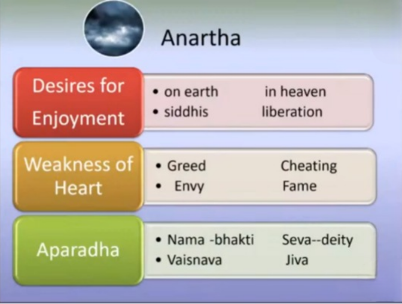
The other type of covering was the Anarthas, which means obstacles or unwanted things, material desires, etc., caused by material desires, which are broken up into three categories by Bhaktivinoda Thakur. So, one is the desire for enjoyment. We may want enjoyment now, on earth, in this present lifetime. We may want, of course, that’s the common one nowadays, in previous times, they would aspire for heavenly enjoyment or enjoyment from yoga siddhis or even liberation. So, if we have these desires mixed with our bhakti, it becomes anartha and it becomes a type of nāmābhāsa. So, that means mixed bhakti, Jñāna-misra bhakti or karma-misra bhakti are basically part of this nāmābhāsa, anartha. As a product of material desire, it’s kind of fixed in the jiva, we get all sorts of distortions of that desire to enjoy and these become what are called weakness of heart. It may become greed, cheating, envy, desire for fame and position, etc. So, these are called weakness of heart and they’re also called anartha.
And, the third category is aparadha. Now, aparadha, if it’s unintentional, just out of ignorance or whatever, then it stays as anartha and we have nāmābhāsa. If the aparadhas are intentional, of course, then it becomes something else. It’s no longer nāmābhāsa, it’s nāmāparādha in capital letters [Laughs]. Its very destructive. But, if it is just like you know unintentional due to ignorance, etc., then it remains anartha. We have aparadhas against the name, nāmāparādha, or against bhakti. We have aparadhas against the deity. These are called sevaparadhas, mentioned in Nectar of Devotion. We have the Vaishnava aparadha, which is very serious. It’s called the mad elephant offense. And, we have aparadhas against jivas in general, which we generally call sin. So, all these are there and they create anartha.
How do we get rid of the anarthas? We get rid of the ignorance by knowledge. Not so difficult. How do we get rid of the anarthas? One, of course, is bhakti itself, anartha nivritti.
By destroying our anarthas, or by doing bhakti, we destroy the anarthas and we get to nistha, we continue bhakti, we destroy more anarthas, and then we get to ruchi, asakti, bhava, and then finally to prema. So, bhakti itself will destroy anarthas. However, if we’re in ignorance and we’re just doing some sort of bhakti, we don’t quite know what we’re doing, the destruction of anarthas will be much slower.
So, if we do have knowledge of the correct process of bhakti, and pure bhakti, and we do know what these anarthas are, if they start surfacing in our practice, then we can actually reject them. So, again, knowledge also is important for getting rid of your anarthas. And, of course, apart from the practice, again, the association of devotees is very important. By associating with devotees, they can also point out if there is problems in our bhakti, because we have certain anarthas. So, therefore, nāmābhāsa is largely corrected by proper knowledge, and by following the process of bhakti, we get rid of the anarthas, we come to suddhanama. If we get to suddhanama, then we can get to prema. So, we should rise above nāmābhāsa stage [Laughs].
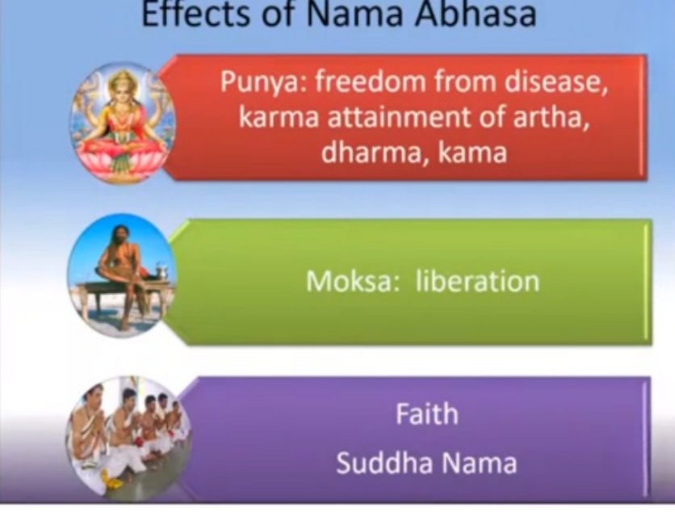
So, we criticize nāmābhāsa , not so nice, but it does have effect. It is the best punya. So, by doing nāmābhāsa, and you have material desires, you can get free of disease, you can destroy your karmas, you get artha, dharma, kama, all these things [Laughs]. So, it’s the best of punyas, chanting the name, better than doing yajnas and charities, etc. you can get much more. You can also get liberation, very easily, as we see in the case of Ajamila, who was chanting and got rid of all of karmas. The best effect of nāmābhāsa is you get association of devotees, you develop faith, and you chant suddhanama [Laughs]. So, that’s the best result of nāmābhāsa, if you can get association of persons practicing pure bhakti, then you can get to suddhanama.
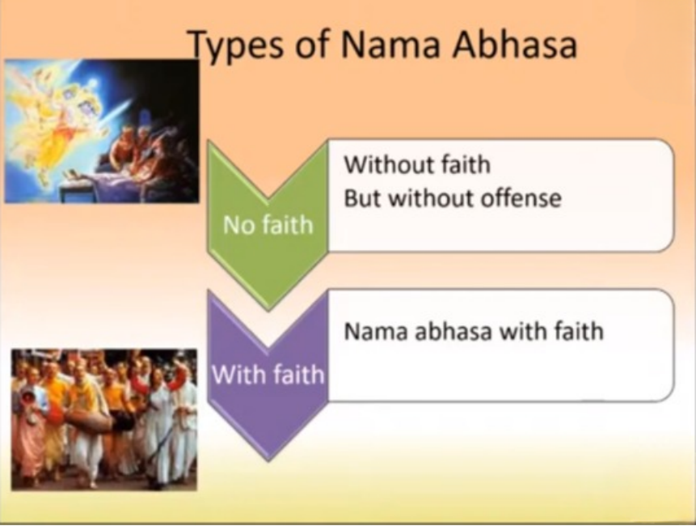
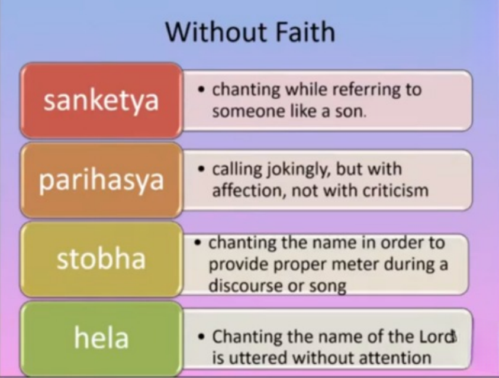
So, one type of nāmābhāsa is with no faith. That means accidental chanting. But also, it gives its best effect when there’s no offense, as in the case of Ajamila. No faith, but no offense. So, immediately he chanted the name Narayana, all of his karmas were destroyed, very strong effect.
The other type of nāmābhāsa is we do have faith, and we’re chanting. Of course, if we’re in ISKCON or in any Gaudiya Sampradaya, generally we will have knowledge, etc. So, we’re not going to have, you know, such bad nāmābhāsa . But other people may be chanting with faith, and they will have ābhāsa. And there will be different types of ābhāsa also, I’ll mention later. So, they’re chanting, but ignorant or whatever. They’re chanting with some sort of faith, but not pure faith, not pure bhakti.
In Bhagavatam, there’s a description of chanting when we don’t have faith. One is called sankhetya. That means refer to something else, and that’s like Ajamila. He chanted the name of Narayana, but he didn’t mean Narayana, Vishnu, he meant his son [Laughs]. So, we may name something. You name your son after the Lord, and you chant the name of your son, that’s sankhetya [Laughs]. You name your liquor store Balaji Liquor Store [Laughs], then it’s [Laughs] sankhetya [Laughs]. Like that Krishna Sweets, that’s in the airport [Laughs] in Chennai [Laughs]. So, everyone chants the name Krishna Sweets, gets nāmābhāsa that way, that’s sankhetya [Laughs].
Parihas is using the Lord’s name jokingly. You chant Krishna’s name as a joke, or whatever like that. There’s no criticism there, so it’s also okay. And Stobha is something they use in singing. When they sing alaps and stuff like that, then they’re saying ah ah ah all this, so they will say the name Narayana [Laughs] and prolong the syllables and fill it up with the name Narayana, so that’s called Stobha.
Hela is to say the name of the Lord inadvertently, “Oh Krishna, I’m tired today”. Like that [Laughs]. So these are types of without faith people chanting and they get some effect from that. In fact, in Bhagavatam it says, a person who chants the name of the Lord while falling off a cliff, stumbling on the road, receiving injury to his body, being bitten by snakes, tormented with fever, being attacked with sticks, will not suffer hellish punishment [Laughs]. So these are people who have no faith, but they suddenly say the name Krishna or Vishnu or whatever in some, you know, awkward circumstance. So they are free from the effects of Yamaraja even, very strong.
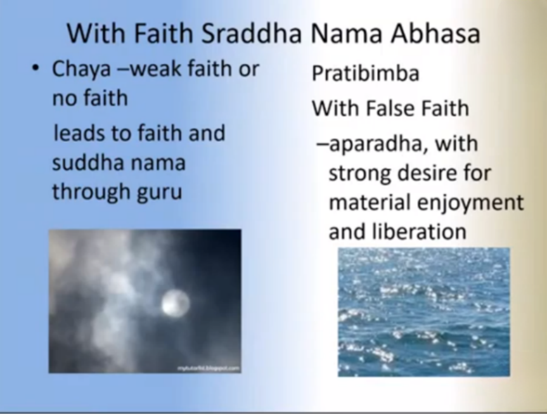
So, when we have faith, there are two types of nāmābhāsa . One is called Chaya, the other is called Pratibimba. Chaya means like shadow. So we have weak faith or no faith, but if we have no faith, we do Chaya nāmābhāsa, we don’t have any aparadhas, we can develop faith, and if we do that, we can eventually meet devotees and Guru and chant purely. So this is like the, out of ignorance. We have faith, but out of ignorance we got all sorts of Abhasas. No problem with that, so it’s best.
The other is called Pratibimba. This is intentional chanting, but not with, you know, offense out of ignorance, but deliberate offense [Laughs]. So this will be the Mayavadis will intentionally chant, but they’ll also intentionally say actually we’re chanting not because we want to praise the Lord, but because we want to merge in Brahman [Laughs]. And Krishna ultimately is a material entity. So this is actually aparadha. They have faith, but their whole basis of chanting is philosophically an offense [Laughs]. So they have a strong desire for liberation, other people may have strong desire for material enjoyment. And it’s quite deliberate. So this has got a lot of aparadha in it. This is called Pratibimba, called Pratibimba because if we have the river or the water, with the water reflecting on it and it’s wavy, we don’t see the reflection of the sun at all. It’s all broken up in little particles [Laughs]. So the image is completely dispersed. So it’s very little effect.
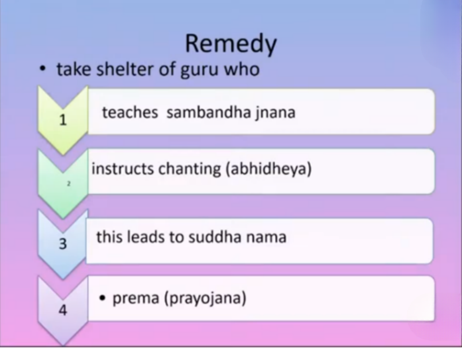
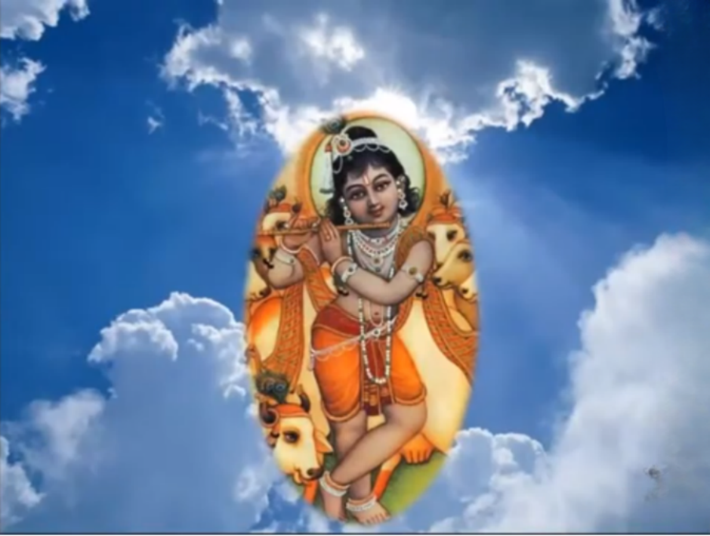
So, if we have nāmābhāsa , what is the remedy? Take shelter of Guru or devotee who will teach us Sambandha-jñāna. This way we get rid of the ignorance. He gives instructions on chanting properly. And by that, Abhideya, we can get rid of our Anarthas and we come to Suddhanama. And with Suddhanama , then we get Prema.
Okay, any question there?
Q & A
HH Bhanu Swami Maharaj : You had that question, was it answered or not [Laughs]?
Devotee : Yes, I guess. Just back one. Can we go back one?
1) I think the people I’m talking about are the Chaya. But it just goes on for decades. Okay.
So those are people not really offensive, but out of ignorance, they got this ābhāsa [Laughs]. And by association with devotees, they can cure it. The other people, even if they associate with devotees, they will not cure their ābhāsa because they’re fixing their philosophy, which is offensive.
2) Sometimes we hear that statement that in Kali Yuga, chanting the holy name is the only way. We hear that sort of rephrased slightly to say that the only thing you have to do is chant the holy name, which takes away all the other supporting things. Is that in this Chaya place?
Well, yeah, chanting in any form. But actually, even for Krishna’s name, even aparadha does something. So Sishupala was an offender, but he chanted constantly Krishna’s name out of hatred. By doing that, he got purified. So that’s why his head got cut off, and he got prema, and he went to the spiritual world [Laughs]. So that’s because of Krishna’s name. Krishna’s so powerful and so attractive, he got absorbed in Krishna’s name, even if he was an aparadhi, and his aparadha was completely wiped out [Laughs]. But with other names, no. Krishna’s name, yes, because you become absorbed in Krishna’s name.
HH Bhanu Swami Maharaj : [Laughs]
Devotee : He keeps tapping me all the time [Laughs].
HH Bhanu Swami Maharaj : He wants to ask a question.
Devotee : Are you on the next? Can I ask one more?
3) So with the Mayavadi and the Brahmavadi, Sukadeva and four Kumaras, so they didn’t make a philosophy of the position of Bhagavan? Is that why they’re able to?
Well, with we have Brahmavadis or impersonalists who are not Mayavadis. So Mayavadis are those who claim that Shiva does not exist, Lord has no form, Lord with the form is a sattva-guṇa manifestation [Laughs], so like that. So that’s offensive. Other Brahmavadis may not believe that or claim that. But they still want to emerge in Brahman or they’ve attained that position of realizing Brahman. They’re not rejecting God or anything like that, but they’re just they’ve attained that level of Brahman peacefulness and realization of God with no form, but they’re not offending the Lord. So they can progress from that.
4) I just keep hearing about the three yogas like karma yoga, jnana yoga and bhakti yoga. Just getting onto karma yoga, it’s like we know that the Vedas, the karma comes in sections, the Vedas are so vast, but that’s really for like India, you know, like people are aware of it.
HH Bhanu Swami Maharaj : Other countries know they’re not doing it.
Devotee : Where does it start in the West? Where does karma yoga start in the West? That’s sort of my question.
HH Bhanu Swami Maharaj : The equivalent, I don’t think we have an equivalent, but we can say following basic moral principles. So in Christianity, of course, they follow morality and emphasize that. So we can say that’s kind of like you know some aspects of karma yoga. Avoid sinful activity, do punyas. That’s again part of karma yoga. So we have elements of that around the world in different religions and different codes of conduct, etc. The more particular things like, you know, rituals and things, of course, there’s nowhere in the world [Laughs]. And those are particularly there to get to Svarga Loka. But of course, in the modern world, people aren’t striving for Svarga Loka anyway [Laughs], so it doesn’t matter too much. But they are, you know, this basic morality does actually, avoiding sinful activity will help to elevate you, at least to sattva in this world. [Laughs] Yes, it’s a partial karma yoga [Laughs].
5) Maharaj, with Pratibimba, would that be the same as, you know, we have these yoga groups which chant Aum and then they sometimes chant Govinda and Hare Krishna. It’s a mix. So would you say that usually, at least from what I understand, they do it because they derive some kind of enjoyment and they’re like enjoying the sound vibration. So would that come under Pratibimba?
It could go either way. Either Chaya or Pratibimba. Probably it’s not so much Pratibimba because they’re probably not so attached to the philosophy, but that impersonal philosophy, but they’re just accepting it [Laughs] because somebody told them [Laughs]. And this is a common thing. The other point, of course, is when you get to sattva, sattva-guṇa , your tendency is to go into such an impersonal mood because you get an inkling of Atma.
I’m not the body, I’m something else. So that kind of directly puts you into this mode of let’s merge or let’s be peaceful and go beyond material world, shanti, and all this [Laughs]. So if you get to sattva-guṇa , then naturally that develops, so therefore these yoga groups probably manifest a lot of that. And of course then they have the influence from India, whatever, impersonalism, whatever, because they have their teachers who are impersonalists, so then they take that. But they’re probably not so much really attached to it as a philosophy. And if you preach to them, whatever, then they could also change their mind. So it’s more like Chaya in one sense, you know, because they don’t have strong conviction in it and not really aware that it’s not aparadha, you know, offend the form of the Lord, etc.
6) Just an extension again, sorry. Sometimes, you know, we have women coming along and I’ve been told a few times, you know, that they had tears coming in their eyes and they just felt that they’ve been, say, two days on the farm, you know.
HH Bhanu Swami Maharaj : [Laughs]
Devotee : And so is that something sentimental or is it more, I mean, I fail to understand as…
HH Bhanu Swami Maharaj : This is explained in Nectar of Devotion, actually, in Bhava, in the section on Bhava in the first part of Nectar of Devotion, which is probably covered in Bhakti Sastri. And when they talk about Rati ābhāsa or Bhava ābhāsa . So they speak of Bhava, which is a stage where you realize the Lord momentarily and you start getting some ecstatic symptoms like crying and fainting and shivering, etc. And then he mentions that there is what we call Bhava ābhāsa , where you’re not at the stage of Bhava, you have not realized the Lord, actually, but you may get the symptoms [Laughs]. So, you may just begin Bhakti, but you have a very sentimental heart, so you may cry or you may faint or whatever. So it’s not done intentionally as imitation, but out of sentimentality. So it’s not real Bhava. At the same time, it’s not heavily criticized because it’s not done falsely or of false pretenses.
The other type of ābhāsa , Bhava ābhāsa, is intentionally imitating in order to get fame [Laughs], which is quite common in Bengal. So people who are not real devotees and they just chant as a profession, they will faint during the kirtan or they will cry and they’ll embrace each other and roll on the ground and do all these things. But when they finish the kirtan, then they go out and smoke a cigarette or whatever [Laughs]. So that’s actually imitation [Laughs]. So that’s really condemned as being false. The other one is not, you know, no bad pretenses or whatever like that, no motive, but just out of sentimentality it happens. So that’s called Bhava ābhāsa. That’s the Chaya Bhava ābhāsa. The intentional one is the Pratibimba, where they’re doing it for material benefit.
7) Sorry, the last one. In Rishikesh Maharaj, right now we have I think Indradyumna Maharaj there and he’s reaching out to the yoga community there. And they’re doing regular kirtan there and lots of people are coming in. As an institution, you know, of course ISKCON in Rishikesh and with Maharaj doing that, so obviously the intention is to attract people to bhakti and people are, when they’re chanting those names, they would probably have some information because Maharaj is there and coming from someone like him, there’s a devotee chanting. That’s definitely much better than they themselves doing kirtan amongst Mayavadi groups, right? So that kind of chanting of course would have more of a positive effect.
Than non-devotees chanting. Yes. Definitely. We see that of course it says that Avaishnava, one who’s not a devotee explains the scripture and recites the scripture. It’s like poison [Laughs]. Whereas one who’s a devotee, it’s like nectar. So the same scripture, Bhagavatam, coming out of a non-devotee’s mouth gives no spiritual benefit and the same scripture coming from a devotee gives you know, prema. So of course the name is a little more flexible because we have people like Ajamila chanting accidentally and they get the effect.
But still, if people who are impersonalists chant the name, we’re going to get a different effect than if a devotee chants [Laughs]. Definitely it’s going to be there.
Devotee : Thank you, Maharaj.
8 ) Maharaj, if somebody’s a non-devotee but doing kirtan, chanting the holy name, would it be better to avoid that or would it be okay to join in with them?
[Laughs] If we could influence them by our being there, maybe it’s good. If we get too influenced by them, it may be bad [Laughs].
9) It says there that the last name of Maya for devotees is the attachment for name, fame, profit and adoration. So how does the Pratibimba come into place for someone also acting, a devotee acting above their adhikar or qualification?
So that would be more with the anartha here. [Laughs] Weakness of heart, desire for fame, position, etc. This becomes very strong. So it’s a pollution to our bhakti as an anartha . So that’s another type of nāmābhāsa. Another way of looking at it is that it’s like a weed in devotional service. We have bhakti and we plant the seed of bhakti and it grows up and we cultivate it with watering, hearing and chanting. But then we get weeds growing up. So the weeds may be pratishta, desire for fame and position, etc. Could be other things as well. So these weeds may grow up and if we don’t cut them down, then they may smother the plant of bhakti [Laughs]. So they are a type of anartha .
10) Hare Krishna Maharaj. In the same slide, it was mentioned there are two types of nāmābhāsa . One is the ignorance and the anartha . But taking the anartha part, for example, if we consider all the Vaishnavas, specifically Gaudiya Vaishnavas, they do have the knowledge even at the beginning that the name and the Krishna are non-different. Krishna is the supreme. But let’s consider they have some desires or weakness of heart but still they have the knowledge about the name and they chant with the knowledge with these anarthas. So does it mean no Vaishnava chants in nāmābhāsa because they have the knowledge about the name?
Well, if the anarthas are out of control, then we would say it’s still nāmābhāsa . If we have knowledge of the anarthas, if we have little knowledge, then at least we are going to control them and we may have greed in our heart but we are not going to explicitly show our greed. We may have some fame, desire for fame, but we are not going to start exploiting others to get a position, etc. So with knowledge, we can control these things and if we practice bhakti, they become weaker and weaker, anartha-nivrutti takes place and they are dissipated. So because we are doing bhakti as a sadhana and we begin with little faith, we have a little bhakti and we have a lot of anartha s anyway, only through the process of bhakti will ultimately destroy the anarthas. And even if we get to nishtha, it’s not all destroyed. Even if we get to bhava, not completely destroyed, maybe there is 0.1% left in bhava stage. So therefore, one says we are never doing pure bhakti, except in prema [Laughs].
But, we call the whole process uttama bhakti or pure bhakti from sadhana to bhava to prema, because at least we have the knowledge so the ignorance is destroyed and the anarthas, even if we have them, we keep them under control and by the process of bhakti, they will get less and less and less. So even that is called pure bhakti, pure bhakti in sadhana. It’s not really pure, but it’s as far as if we do this, we can get to bhava and prema. So we have pure bhakti in sadhana, will lead to pure bhakti in bhava and prema. If we don’t do pure bhakti in bhava, and we just allow our anartha s to sprout and everything, we don’t get to bhava and prema. So then, pure bhakti leads to pure bhakti leads to pure bhakti.
11) So, when we say we need to keep our anarthas in control, so apart from chanting with the right knowledge, so what other steps can we take so that our anarthas doesn’t grow and we just check them and reduce it?
Well, of course we have introspection, our own seriousness in bhakti. So, when we’re cultivating the tree or the creeper of bhakti, we’re the gardener. We look around and see if there’s any weeds [Laughs]. We don’t expect somebody else to come and hire another gardener to pull out the weeds. We have to pull out our own weeds. So we do have to have some introspection. But of course, sometimes we’re careless and overlook whatever. So if we have association of devotees who are serious, they can also help us to point out the weeds and we’ll accept it and then we can safeguard ourselves that way. So we have an association of devotees that will also help us keep the anartha s under control.
12) Thank you Maharaj for a wonderful presentation. How when Mahaprabhu was talking to the Vaishnavas who came and they asked repeatedly, year after year, how is it and it was described that it was Kanistha Vaishnavas, Madhyama Vaishnavas, Uttama Vaishnavas. So the Vaishnavas who are Kanishtha Adhikaris, and it’s said that you can only chant Suddha Nama in the association of Suddha Bhaktas. Is that right?
Usually, if we’re in nāmābhāsa, only when we get to Suddhanama is by association of devotees we get knowledge from them, etc.
13) So I’m just wondering how was it that those who were Kanistha Vaishnavas were able to chant Suddhanama?
HH Bhanu Swami Maharaj : Oh, well, in this case it was chant once, purely. So they got association, but they weren’t so enthusiastic to continue chanting, but they said okay Hare Krishna, I accept it [Laughs], but they don’t chant more than that. They don’t do it as a regular sadhana, in other words. So they’re a type of Vaishnava because they have correct philosophy, but they don’t have that real determination to do it as a regular sadhana every day.
14) What would have been the effect of them chanting Suddhanama?
HH Bhanu Swami Maharaj : Better than chanting nāmābhāsa, like Ajamila. So they get more than destruction of all your karmas. But still, they’re not going to get prema just by chanting once purely [Laughs]. So they have to chant constantly, purely. In other words, chanting once purely, they can progress through bhakti, but they don’t get to the highest result and it’s going to be a slow process. Whereas if we chant constantly, it becomes quicker.
15) So does one have to progress through all the eight stages of bhakti before they can chant Suddhanama?
HH Bhanu Swami Maharaj : No, Suddhanama starts in sadhana. It starts in sadhana. In other words, pure bhakti starts with sadhana and goes to bhava and prema. So the attempt in Nectar of devotion is to get everyone to chant or chant or to do devotional service in pure bhakti as sadhana, which means proper knowledge and minimize your anarthas. So it starts in sadhana.
Devotee : So someone would have gone from that Suddhanama to then maybe chanting nāmābhāsa or chanting namaparadha, yes.
HH Bhanu Swami Maharaj : You can go backwards [Laughs], especially if you’re careless and you have bad association. Then you can fall from suddhanama and develop material desires strong or develop negative philosophical conceptions [Laughs], get influenced by impersonalism or something. Do you to bad association. So yes, then you can develop namaparadha. So it can happen. That could happen anyway up into even bhava stage. If you have bad association, some from bhava can fall also.
16) Question is not audible
HH Bhanu Swami Maharaj : Yes, material desires of ignorance.
17) Material desires of ignorance. And then we hear when we recite the ten offenses, the last one is maintaining material attachments is an offense. Is that the crux of it? That when those material desires are kind of maintained without giving them up, that it comes from just ābhāsa into aparadha?
So that last offense is also discussed later on by Bhaktivinoda Thakur in discussing the offenses is of course qualification for doing bhakti is to have a taste for the name, faith in the scriptures, etc. and not too much material attachment and not too much detachment. Otherwise we become impersonalists. So if we got too much material attachment, even if we have a little taste for the name, then it’s very difficult to practice bhakti. And if we keep stubbornly attached to that material enjoyment, then it’s very difficult to advance. So we have the example of the boatman going up the river and then the anchors in the river and he’s going all night, putting forth all his efforts and he looks in the morning, he’s in the same place. Why? Because the anchor was there [Laughs].
So if we understand the process of bhakti superficially, but still our desire is to stay in the material world and enjoy, even though we talk about prema, etc., we still want to enjoy in the material world and we don’t give that up, it’s very difficult to advance. It’s like being pulled back all the time. So it can become an offense. In that sense, the bhakti would become like superficial and we would do it for show and at the same time, actually, we don’t want to advance at all. We’re just trying to enjoy out of the process of bhakti. So that would become very offensive.
I guess the time is up. Okay, Hare Krishna.
Devotees : Hare Krishna. HH Bhanu Swami Maharaj Ki.. Jai !!